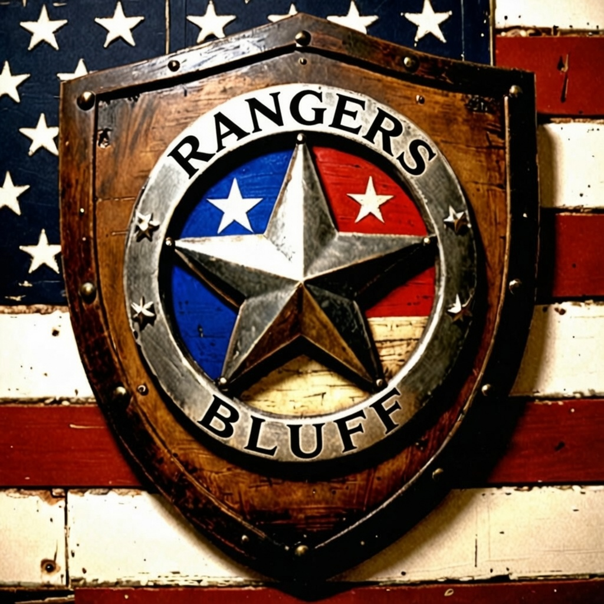

Rangers Bluff RP is a frontier economy roleplay server built on the idea that a frontier town only works when people depend on each other. There are no NPCs selling you the best gear. There are no easy shortcuts to power. Everything of real value — weapons, supplies, horse care, information, reputation — flows through player hands.
The server is inspired by Bandera RP, built and run by Adabelle and Terri Corn. Bandera set a standard for what a RedM RP server could feel like: slow-paced, community-driven, economically interconnected, where your character's reputation and skills actually meant something over time. That server is gone now, but the soul of it — a world where a blacksmith, a bounty hunter, a rancher, and a cook all need each other — is what Rangers Bluff is trying to carry forward.
The server is not a combat server. PvP exists and has consequences, but it is a tool for roleplay — not the point of the game.
Rangers Bluff is for adults only. The server features nudity, alcohol, violence, and (eventually) gambling. If you are under 18, this is not the server for you — no exceptions.
The frontier was a crude place and our roleplay reflects it. Expect rough language, dirty dealings, drunks, con men, and characters who are not nice people. In-character conflict — insults, robbery, betrayal, grudges — is part of the game, and we are not here to referee hurt feelings. Keep your grievances in character and play through them; that's where the good stories come from.
Two lines we do hold:
The test is simple: would it drive a reasonable player away? Then don't. Would it merely ruffle a delicate sensibility? That's just the frontier.
The server runs three active towns — Valentine, Rhodes, and Strawberry — each with a full set of crafting stations, stable services, sheriff, information broker, and player vendor support. Additional towns (Saint Denis, Annesburg, Blackwater) are in development.
NPCs are sparse and purposeful. There is no quest marker telling you where to go. The sheriff posts a wanted list. The information broker sells leads. Everything else is between players.
A profession is your character's primary economic identity. Professions create interdependence — a blacksmith needs a miner for ore, a cook needs a farmer for ingredients, a horse trainer needs riders who want trained horses. No one is self-sufficient, and that is intentional.
All 20 professions are currently open to all players. Any character can level any skill by doing the associated activity. This phase continues until the server reaches a critical mass of active players.
| Category | Professions |
|---|---|
| Land & Gathering | Mining, Farming, Hunting, Tracking, Butchering |
| Crafting | Blacksmithing, Gunsmithing, Tanning, Tailoring, Carpentry, Herbalism, Leatherworking, Baking, Ore Refining, Hunting Craft, Jewelcrafting |
| Trade & Living | Cooking, Brewing, Trading, Horse Training |
Once the player base reaches critical mass, the server transitions to a one-profession-per-character system:
Ratio-controlled availability. If too many blacksmiths exist, that profession locks for new selection until the ratio normalizes. The game shows which professions are available and what the caps are. A town needs one or two smiths, not twenty.
Every character has 20 skills, each from Level 1 to Level 5. Skills advance by doing the activity — there are no skill books or shortcuts. Each level unlocks new recipes, access, or multipliers.
| Group | Skills |
|---|---|
| Land & Gathering | Mining, Farming, Hunting, Tracking, Butchering |
| Crafting | Blacksmithing, Gunsmithing, Tanning, Tailoring, Carpentry, Herbalism, Leatherworking, Baking, Ore Refining, Hunting Craft, Jewelcrafting |
| Trade & Living | Cooking, Brewing, Trading, Horse Training |
| Command | Description |
|---|---|
/skills | Show skill group shortcuts |
/skills land | View Land & Gathering skills |
/skills crafting | View Crafting skills |
/skills trade | View Trade & Living skills |
/skills [name] | View a single skill — partial match works (e.g. /skills horse) |
/skillinfo [name] | View all five level thresholds and unlock descriptions |
Example messages: "Skills — Blacksmithing: Lvl 2 — 318/600 pts (53%)" / "★ Blacksmithing reached Level 3! Unlocked: Refined hardware and fittings"
| Currency | Description |
|---|---|
| Cash | On-hand money. Used for most transactions. |
| Bank Balance | Safe storage. Use /deposit and /withdraw at any time. |
| Gold | Premium currency for rare transactions. |
| Marked Bills | Dirty money from criminal activity. |
| Command | Description |
|---|---|
/balance | Show all four balances: cash, bank, gold, marked bills |
/deposit [amount] | Move cash into your bank account |
/withdraw [amount] | Move bank balance to cash on hand |
Crafting stations are fixed locations in each town. Approach the station until the G prompt appears, then hold G to open the crafting menu. You cannot craft above your current skill level. Ingredients are consumed when you begin.
| Station | Valentine | Rhodes | Strawberry |
|---|---|---|---|
| Blacksmith Forge | ✅ | ✅ | ✅ |
| Gunsmith Bench | ✅ | ✅ | ✅ |
| Cooking Fire | ✅ | ✅ | ✅ |
| Stable Workbench | ✅ | ✅ | ✅ |
| Butcher Bench | ⏳ coords needed | ✅ | ⏳ coords needed |
Butchering lets you process a dead animal carcass into raw meat cuts at a Butcher Bench. Cuts go directly into your inventory and can be cooked, sold to other players, or stocked in your vendor. Your Butchering skill (Level 1–5) determines how many cuts you yield per session.
| Butchering Level | Cuts Yielded | Notes |
|---|---|---|
| 1 | 1 cut | Starting level |
| 2 | 2 cuts | |
| 3 | 3 cuts | |
| 4 | 4 cuts | |
| 5 | 5 cuts (full yield) | Master butcher |
Cuts are drawn randomly from each animal's pool — a higher skill level gets more draws, not guaranteed specific cuts. Over time you will see every cut from a species.
Animal Fat renders out too. Most butchering sessions also yield Animal Fat alongside the cuts — bigger animals render more (an elk gives up to 3, a rabbit 1). Fat feeds Gun Oil, Tallow, Life Pills, and Horse Medicine, so butchers sit at the head of some of the most important supply chains on the server.
Bone and Raw Meat now drop too. Every butchering session also yields Bone and Raw Meat (1–2 each). Bone feeds tallow, fertilizers, bone handles, hunting charms, and fine jewelry; Raw Meat is the base ingredient for the cook's and baker's staples — jerky, stews, meat pies, cured ham, sausage, and pemmican. Both were previously impossible to obtain, so a whole tier of recipes is now craftable.
Away from the butcher benches, any dead animal can be skinned where it fell: carry a knife, walk up to the carcass, and hold G. Skinning takes the hide — the carcass stays behind, so a full harvest is yours if you do the work:
Big game like elk and moose can't be carried — out in the wild the hide and antlers are what you ride home with. Near a bench, the bench prompt takes priority.
Why antlers matter: gunsmiths use them for pistol handles. Every pistol and revolver recipe now calls for one — deer antler for working irons, elk for finer pieces, moose paddle for the LeMat and Mauser.
| Animal | Size | XP Awarded | Possible Cuts |
|---|---|---|---|
| Whitetail Deer | Large | 25 XP | Front Shank, Rear Shank, Tenderloin, Neck Roast, Backstrap |
| Elk | Very Large | 35 XP | Chuck Roast, Rump Roast, Tenderloin, Ribeye, Osso Buco Shank |
| Wild Boar | Large | 25 XP | Pork Belly, Shoulder, Loin Roast, Ham, Baby Back Ribs |
| Black Bear | Very Large | 35 XP | Shoulder Roast, Rump Roast, Loin Steak, Paw Meat, Belly Slab |
| Rabbit | Tiny | 8 XP | Hind Legs, Front Legs, Loin, Rib Cage Meat, Offal |
| Wild Turkey | Medium | 18 XP | Breast Fillet, Drumstick, Thigh, Wing, Carcass Stock |
| Town | Status |
|---|---|
| Rhodes | ✅ Active |
| Valentine | ⏳ Bench location needs in-game coords — use /butchercoords at the bench |
| Strawberry | ⏳ Bench location needs in-game coords |
| Blackwater | ⏳ Bench location needs in-game coords |
| Saint Denis | ⏳ Bench location needs in-game coords |
| Annesburg | ⏳ Bench location needs in-game coords |
Rhodes is the only active bench right now. Other towns have placeholder coordinates. Wolf: stand at each town's butcher bench and run /butchercoords in F8 to get confirmed coords.
Wild plants grow throughout the frontier — berries, herbs, mushrooms, and rare botanicals. Walk up to a bush or shrub and hold G to forage. No map markers — you find plants by exploring.
| Zone | What You Find | XP | Cooldown |
|---|---|---|---|
| Safe | Berries (2–5), Common Herbs (1–3), Mushrooms (1–3) | 1 XP | 5 min |
| Frontier | Common Herbs (2–5), Berries (2–4), Mushrooms (1–3), Rare Herbs (1) | 3 XP | 10 min |
| Danger | Rare Herbs (1–3), Common Herbs (3–6), Mushrooms (2–4) | 6 XP | 15 min |
Each bush has its own cooldown timer. Once foraged, it won't yield again for several minutes — move on and come back later. Danger zone plants are deep in the wilderness; watch for predators.
Foraging has its own dedicated skill. Each gather awards XP. Higher skill levels increase your yield — a level 5 forager collects significantly more per bush than a beginner.
Young trees and saplings across the frontier can be chopped for raw wood materials. You need a hatchet in your inventory. Walk up to a sapling and hold G to chop.
| Item | Chance | Yield | Uses |
|---|---|---|---|
| Soft Wood | 60% | 2–5 | Fuel, basic crafting |
| Sap | 25% | 1–2 | Crafting, alchemy |
| Hard Wood | 12% | 1–2 | Construction, premium crafting |
| Rubber | 3% | 1 | Rare crafting material |
You get one material type per chop — drawn randomly from the table above. Each tree has a 10-minute cooldown after chopping. Move between saplings to keep a steady yield. Saplings are found throughout forested areas — maple, birch, pine, fir, lodgepole, cypress, and more depending on the region.
Woodcutting has its own skill that levels up with each chop. Higher skill levels increase the amount of material you collect per tree.
Everything harvestable in the world — foraged plants, chopped trees, and gathered crops — uses a hold G interaction. No map markers. No waypoints. You find resources by exploring. This page is the complete reference for what drops from what.
Forage from wild bushes, shrubs, and plants by walking up and holding G. You need no tools. Each plant has its own cooldown after being harvested.
| Zone | Item | Chance | Yield | Cooldown |
|---|---|---|---|---|
| Safe | Berries | 55% | 2–5 | 5 min |
| Common Herbs | 35% | 1–3 | ||
| Mushrooms | 10% | 1–3 | ||
| Frontier | Common Herbs | 45% | 2–5 | 10 min |
| Berries | 30% | 2–4 | ||
| Mushrooms | 15% | 1–3 | ||
| Rare Herbs | 10% | 1 | ||
| Danger | Rare Herbs | 50% | 1–3 | 15 min |
| Common Herbs | 35% | 3–6 | ||
| Mushrooms | 15% | 2–4 |
You can carry up to 100 of each forage item. Gathering stops when you hit the cap — sell, stash, or craft to make room.
| Biome / Region | What Grows There |
|---|---|
| West Elizabeth / Big Valley | Bramble bushes, leafy shrubs, large brush, scrub bush |
| Lemoyne / Roanoke | Bramble (dead & live), ficus, neat hedgerow, thick scrub |
| Grizzlies / Ambarino | Alpine scrub, mountain brush |
| Bayou Nwa / Bluewater Marsh | Cat-tail, large swamp brush, palmetto undergrowth |
| New Austin / Rio Bravo | Desert scrub, dry brush |
Chop trees and saplings with a hatchet in your inventory. Walk up to a tree and hold G. All trees share a single loot pool — every chop draws one item type.
| Item | Chance | Yield | Uses | Cooldown |
|---|---|---|---|---|
| Soft Wood | 60% | 2–5 | Fuel, basic crafting, building | 10 min |
| Sap | 25% | 1–2 | Crafting, alchemy, adhesives | |
| Hard Wood | 12% | 1–2 | Premium crafting, construction | |
| Rubber | 3% | 1 | Rare — specialized crafting |
| Biome / Region | Tree Species Found |
|---|---|
| West Elizabeth / Big Valley | Maple, Lodgepole Pine, Ponderosa Pine, White Pine, Birch, Cottonwood, Poplar |
| Roanoke Ridge / Annesburg | Maple, Birch, River Poplar, River Birch, Sycamore, Beech |
| Cumberland Forest / Tall Trees | Douglas Fir, Lodgepole Pine, White Pine, Fallen Pine, Ponderosa Pine |
| Grizzlies / Ambarino | Snow Fir, Snow-Capped Douglas Fir, Snow Pine (Lodgepole), Fir Saplings |
| Lemoyne / Scarlett Meadows | Longleaf Pine, Oak, White Oak, Mesquite, Magnolia, Live Oak, Mossy Oak |
| Bayou Nwa / Bluewater Marsh | Bald Cypress, Magnolia, Willow, Palmetto, Swamp branches & logs |
| New Austin / Rio Bravo | Mesquite, Dead Cedar, Russian Olive, Juniper, Palms |
| Saint Denis / Lemoyne lowlands | Palm, Fan Palm, Bamboo, Banyan, Jacaranda, Mangrove |
Higher Woodcutting skill = more yield per chop. A level 5 lumberjack collects significantly more per tree than a fresh starter. Hard Wood and Rubber are rare draws — a skilled cutter working dense forest can maintain a steady supply.
| Activity | XP per Action | Skill |
|---|---|---|
| Foraging (Safe zone) | 1 XP | Foraging |
| Foraging (Frontier zone) | 3 XP | Foraging |
| Foraging (Danger zone) | 6 XP | Foraging |
| Woodcutting (any tree) | 3 XP | Woodcutting |
Work the land for yourself. Buy seeds, plant them out in open country, tend them, and harvest a crop. Farming is communal — anyone can water, fertilize, or harvest a plant, so a town can work a shared field together.
/plant potato, /plant corn, /plant wheat, /plant tomato, /plant cotton).| Crop | Seed (vendor price) | Farming level | Yield | Seed returned |
|---|---|---|---|---|
| Potato | Potato Seeds ($3) | 1 | 2–4 | 25% |
| Corn | Corn Seeds ($3) | 1 | 2–5 | 25% |
| Wheat | Wheat Seeds ($4) | 2 | 3–6 | 30% |
| Tomato | Tomato Seeds ($5) | 3 | 2–5 | 20% |
| Cotton | Cotton Seeds ($6) | 4 | 3–6 | 20% |
Higher Farming skill lifts the un-fertilized yield toward the top of the range. A fertilized crop always harvests at the maximum.
Walk up to a growing plant and hold G to tend it. Each plant accepts one watering and one fertilizing.
| Action | Effect | Needs |
|---|---|---|
| Water | Cuts the remaining grow time in half (once) | A Watering Can |
| Fertilize | Harvest at the top of the yield range (once) | Herb Fertilizer |
| Rain | Crops grow twice as fast while it's raining | The weather |
| Harvest | Reap the crop (and maybe a seed back) | Hold G on a ripe plant |
Craft a Watering Can at any blacksmith (iron ore ×3 + copper ×1). Double-click it to see how many days it has left — a can dries out and cracks apart about a week after it's forged, so don't make one until you're ready to farm.
| Action | XP | Skill |
|---|---|---|
| Plant | 5 XP | Farming |
| Water | 2 XP | Farming |
| Fertilize | 3 XP | Farming |
| Harvest | 10 XP × crop tier | Farming |
Crops feed the whole economy. Wheat and corn go to bakers and cooks; cotton becomes canvas for leatherworkers and tailors; potatoes and tomatoes fill out hearty meals. A steady farmer keeps a town fed.
When a player kills another player, a kill is registered and a bounty accumulates. Kill enough people and you become Highly Dangerous — the most valuable target on the board. Names are gated behind the information broker and cost money to reveal.
| Command | Description |
|---|---|
/bountyboard | View all active bounties — heat level, kill count, reward — no names revealed |
/mybounty | Check if you have an active bounty on your head |
/collectbounty [playerid] | Collect a reward after killing a wanted player |
/placecontract [playerid] [amount] | Pay to put a kill contract on a specific player |
/opencontracts | List all open kill contracts available to accept |
/acceptcontract [contract_id] | Accept a kill contract and become the assigned hunter |
/mycontracts | Cryptic check — tells you if someone has a contract on you |
Properties are rentable locations — homes, offices, storage rooms — across the towns. Miss your rent due date and you have 7 days to pay before the property is automatically repossessed and all keys revoked. You can prepay up to 3 months in advance.
| Command | Description |
|---|---|
/properties [town] | List available properties, optionally filtered by town |
/myproperties | List properties you own, with rent status |
/rentproperty [id] | Rent an available property — first month deducted immediately |
/prepayrent [ownership_id] [months] | Prepay up to 3 months ahead |
/vacateproperty [ownership_id] | Give up a property voluntarily |
/grantkey [playerid] [ownership_id] | Give another player a key to your property |
/revokekey [playerid] [ownership_id] | Revoke a player's key |
/haskey [ownership_id] | Check if you have access to a property |
Approach a Stable NPC and hold G to open the stable menu. Buy horses and wagons, switch your active mounts, and access stable services.
| Rule | Detail |
|---|---|
| Horses owned | Up to 20 per character |
| Wagons owned | Up to 10 per character |
| Active at once | One horse and one wagon — both can be out at the same time |
| Call your horse | Press H |
| Call your wagon | Press J |
| Send them home | /fleehorse and /fleewagon — your ride heads back to the stable |
| Open wagon storage | Stand beside your wagon and press U — or type /wagoninv (no on-screen prompt shows) |
| Open horse storage | Stand beside your horse and press the horse-satchel key — or type /horseinv |
| Ride | Capacity | Role |
|---|---|---|
| Horse | 60 | Necessities for the long ride |
| Small carts | 250 | Gathering runs |
| Coaches & stagecoaches | 350 | The traveling household |
| Cargo & supply wagons | 400 | Serious freight — your warehouse on wheels |
Until you own a property, your wagon IS your storage — pick one that fits your trade. Hitching your personal horse to a wagon isn't supported (wagons arrive with their own team).
| Tier | Horse Training Skill Required | Example Breeds | Price Range |
|---|---|---|---|
| Low | Level 1 (any player) | Morgan, Kladruber, Mule | $40–$100 |
| Mid | Level 2 | Standardbred, Breton, Kentucky Saddle, Tennessee Walker | $280–$320 |
| High | Level 4 | Missouri Fox Trotter, Shire, Turkoman | $900–$1,500 |
| Bond Level | XP Required | Status |
|---|---|---|
| 1 — Acquainted | 0 | Any player |
| 2 — Familiar | 200 | Any player |
| 3 — Bonded | 600 | Any player |
| 4 | 1,500 | Requires professional trainer |
| 5 | 3,000 | Requires professional trainer |
| Activity | XP Awarded | Notes |
|---|---|---|
| Riding | 2 pts per 500m | Ground travel only, no teleport |
| Jumping | 3 / 5 / 8 pts | Based on airtime: short / medium / long |
Grooming (/groom) | 5 pts | 5-minute cooldown per horse |
Feeding (/feedhorse) | 2 pts | 1-minute cooldown per horse |
| Skill Level | Bond XP Multiplier |
|---|---|
| 1 | 1.0× (base) |
| 2 | 1.5× |
| 3 | 2.0× |
| 4 | 2.5× |
| 5 | 3.0× |
The rarer a breed is across the server, the stronger its passive buffs. A breed owned by only one player gets the maximum buff. Common breeds get none. Buffs apply automatically when you mount — no action needed.
Some items work directly on your horse — open your satchel and double-click them while mounted:
| Item | Effect |
|---|---|
| Horse Feed | Restores your horse's stamina |
| Horse Medicine | Restores your horse's health |
| Life Pills (Lesser / Greater / Prime) | Extend your active horse's lifespan — Lesser +15 days, Greater +30, Prime +45 (up to a 120-day cap) — and restore health & stamina |
Use Life Pills on your living active horse to push back the day it passes. A pill does nothing for a horse that has already died — that takes a Level 5 trainer (below).
Horses now age in real-world days. Every horse has a lifespan, and if you neglect it, it will eventually pass.
Don't lose a good horse. Bonding, training, and tack all live on the horse — letting it die and not reviving it loses that investment. Stock a Life Pill before a long trip, and befriend a Level 5 trainer for emergencies.
Bond Levels 4 and 5 require a professional trainer to unlock. Once a trainer unlocks higher bond levels, the horse retains that training when sold to another player — making high-bond horses a premium tradeable asset. Trainers sell their services as a profession.
A separate skill tracking a player's general bond with their horses. Provides behavioral buffs:
| Command | Description |
|---|---|
/groom | Groom your active mount — awards bond XP, 5-minute cooldown |
/feedhorse [item] | Feed your horse an item from inventory — awards bond XP |
/horsebond | Check bond XP and level of your active horse |
Every player can place one vendor NPC anywhere in the world. Your vendor stands and sells whatever you have stocked — even when you are offline. Money accumulates in your vendor's earnings until you collect it.
| Type Code | NPC Appearance |
|---|---|
blacksmith_vendor | Blacksmith |
gunsmith_vendor | Gunsmith |
general_store | Merchant |
stable_merchant | Stablehand |
trader | Generic Trader (default) |
| Command | Who | What |
|---|---|---|
/placevendor [type] | Owner | Place vendor NPC at current position |
/pickupvendor | Owner | Remove NPC from world — stock and earnings preserved |
/removevendor | Owner | Permanently delete vendor — stock returned, earnings paid out |
/vstock [code] [qty] [price] | Owner, near NPC | Add items from inventory to vendor (max 1,000 per slot) |
/vunstock [code] [qty] | Owner | Pull items back from vendor to inventory |
| Hold G near vendor NPC | Buyers | Browse and buy from the vendor |
| Hold G near your own NPC | Owner | Owner menu: collect earnings, pick up, remove |
Firearms live in your inventory as physical items, not in a hidden loadout. A gun you own is an item you can carry, drop, sell, or hand to another player like any other good. You only have a weapon "in hand" once you equip it.
| Action | How |
|---|---|
| Equip a gun | Double-click the gun item in your inventory — it moves to your holster and is ready to draw |
| Holster / store a gun | /weaponmenu or press F6 — pick a gun to send it back to your inventory |
You can only have so many guns drawn at once. The rest stay in your inventory until you swap them in.
If your slots are full, equipping is blocked until you holster something first.
Any gunsmith work on a weapon — sights, barrels, grips, engravings — is saved to that specific gun. Holster it, trade it, equip it again later: the customizations and loaded ammo come back with it. Your modded Cattleman is always your modded Cattleman.
Firearms need maintenance. A fresh gun is good for 14 days; each bottle of Gun Oil (crafted by gunsmiths) adds 14 more — and a well-oiled gun lasts forever. Oil is the price of keeping your favorite iron. A gun can hold up to 3 months of oil at a time — stock up before a long ride and your iron will be waiting for you. Melee tools don't rust.
| Action | How |
|---|---|
| See it at a glance | Hover a gun in your satchel — its remaining oil shows right under the serial ("Oil: 11 days left") |
| Check all your guns | /gunhealth — lists every firearm's oil days; or /weaponmenu (F6) |
| Oil a gun | Double-click Gun Oil in your inventory, then pick which firearm to oil (+14 days) |
| Let one rust | Past its oil date the gun falls apart for good — equipped or in your bag |
Every firearm you carry needs oil — not just the one in your hand. You'll get a warning when a gun drops under 3 days, so there's no excuse to lose one to rust. Melee tools and your lasso never rust.
Gun Oil is a Tier 3 gunsmithing recipe (animal fat + common herbs) — a skilled gunsmith's product. Visit your local gunsmith or train the trade yourself.
Out past the towns, a handful of legendary animals roam the frontier — beasts of unusual size and temper that old-timers swear by and greenhorns swear at. When one stirs, a rumor spreads in chat naming the general area it was seen. That rumor is all you get: no map markers, no waypoints. Find it the frontier way — ride out, ask around, and keep your eyes open.
These are not ordinary animals. They take a tremendous amount of killing, and a clean headshot won't save you the trouble. Predators — and the boar — will charge you on sight once you're close. Game animals bolt when wounded, so bring a good horse and be ready to ride. Hunting in a party is wise; the kill is announced server-wide with the hunter's name, so expect company if you take too long.
| Rule | Detail |
|---|---|
| Tool required | A Hunting Knife — no knife, no pelt |
| First claim | The hunter who made the kill has 10 minutes of exclusive skinning rights |
| After that | Anyone with a knife may claim the carcass |
| Don't dawdle | An unskinned carcass is lost to the buzzards in about 30 minutes |
| How | Hold G at the carcass |
A skinned legendary yields that beast's own named Legendary Pelt — e.g. The Counselor's Legendary Pelt from the Cumberland elk, or The Warden's Legendary Pelt from the bear — plus a generic Legendary Pelt, trophy sinew, and a claw or antler depending on the animal. The skinner earns Hunting XP; the hunter who made the kill earns Tracking XP.
Each legendary's pelt is its own item — and the rarest recipes demand a specific beast. The Carcano Rifle, the finest rifle on the frontier, can only be crafted with The Counselor's Legendary Pelt — so a master gunsmith needs a master hunter who has tracked and felled that exact elk. The generic Legendary Pelt still feeds the "any legendary" recipes (Legendary Hide Packs, Treated Pelts). A successful hunt is worth real money — if you can get the pelt to a craftsman alive.
A hard day skinning elk leaves a mark. Every hotel keeps a bath out back — $100, hot water included, and yes: you can ring for an attendant who will do the washing for you, just like the old days.
| Step | How |
|---|---|
| Find the tub | Bath house blips at hotels in Valentine, Rhodes, Strawberry, Saint Denis, Blackwater, Annesburg, and Van Horn |
| Buy a bath | Walk up to the tub and hold the prompt — $100 cash, paid at the tub |
| Wash yourself | Hold X to scrub — work through each limb until you're clean |
| Ring the attendant | Use the "Call for the attendant" prompt — included in the price. They'll knock, come in, and handle the scrubbing themselves |
| Get out | Use the exit prompt — you'll dress and step out clean |
| Stuck? | /bathexit climbs you out of a misbehaving tub |
One bather per tub — if it's occupied, wait your turn. A bath washes off blood, dirt, and the general smell of the frontier. Soap may become part of the price once the herbalists work out a recipe.
Settled into your character but want to tweak the face, hair, or build? Ask a staff member for a Makeover Token. Double-click it from your satchel to reopen the appearance editor — redo your hair, face, and body, then save. Your gear, money, and progress are untouched — only your looks change.
| Command | Description |
|---|---|
/balance | Show cash, bank, gold, and marked bills |
/deposit [amount] | Move cash to bank |
/withdraw [amount] | Move bank balance to cash |
| Command | Description |
|---|---|
| Double-click gun in inventory | Equip the weapon to your holster |
/weaponmenu or F6 | Open the weapon menu to holster/store an equipped gun |
| Command | Description |
|---|---|
/skills | Show skill group shortcuts |
/skills land | View Land & Gathering skills |
/skills crafting | View Crafting skills |
/skills trade | View Trade & Living skills |
/skills [name] | View a single skill (partial match) |
/skillinfo [name] | View all level thresholds and unlocks |
| Command | Description |
|---|---|
/groom | Groom your active horse — awards bond XP |
/feedhorse [item] | Feed your horse — awards bond XP |
/horsebond | Check bond XP and level of your active horse |
| Command | Description |
|---|---|
/bountyboard | View active bounties anonymously |
/mybounty | Check if you have an active bounty |
/collectbounty [playerid] | Collect reward after killing a wanted player |
/placecontract [playerid] [amount] | Put a kill contract on a player |
/opencontracts | List open kill contracts you can accept |
/acceptcontract [contract_id] | Accept a kill contract |
/mycontracts | Check if someone has a contract on you (cryptic) |
| Command | Description |
|---|---|
/properties [town] | List available properties |
/myproperties | List your owned properties and rent status |
/rentproperty [id] | Rent a property |
/prepayrent [ownership_id] [months] | Prepay up to 3 months |
/vacateproperty [ownership_id] | Give up a property |
/grantkey [playerid] [ownership_id] | Give someone a key |
/revokekey [playerid] [ownership_id] | Revoke someone's key |
/haskey [ownership_id] | Check if you have access to a property |
| Command | Description |
|---|---|
/placevendor [type] | Place vendor NPC at your current position |
/pickupvendor | Remove vendor NPC (keeps stock and earnings) |
/removevendor | Permanently delete your vendor |
/vstock [code] [qty] [price] | Stock your vendor from your inventory |
/vunstock [code] [qty] | Pull items from vendor back to inventory |
| Command | Description |
|---|---|
mycoords | Print your X, Y, Z, heading to F8 console |
tpto [x] [y] [z] | Teleport to coordinates |
goto [town] | Teleport to a town (valentine, rhodes, blackwater, saintdenis, strawberry, annesburg) |
testnpcmodel [name] | Spawn a test NPC at your feet to preview a model |
cleannpcs | Delete all non-player peds within 20 meters |
nudgenpc [amount] | Move the nearest NPC up or down on Z axis |
spawnnpcs | Force re-spawn all town NPCs |
npcstatus | Show all spawned town NPCs with distance |
spawnvendors | Force re-spawn all vendor NPCs |
vendorstatus | Show all spawned vendor NPCs |
vendorresync | Request a fresh vendor list from the server |
| Command | Description |
|---|---|
giveitem [playerid] [itemcode] [qty] | Give an item to a player |
giveweapon [playerid|all] [weapon] | Give a weapon to a player or all players |
resendrecipes | Push current recipe list to all online players |
givecash [playerid] [amount] | Give cash to a player |
giveskillpoints [playerid] [skill] [pts] | Award skill points directly |
rotatenodes | Force a resource node rotation |
vendoradmin list | List all player vendors with owner, position, earnings |
vendoradmin clear [charId] | Force-delete a player's vendor |